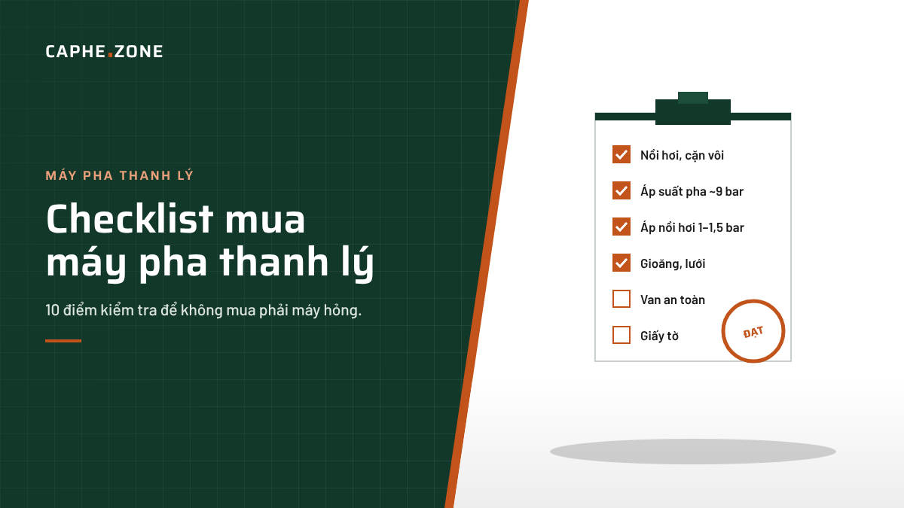
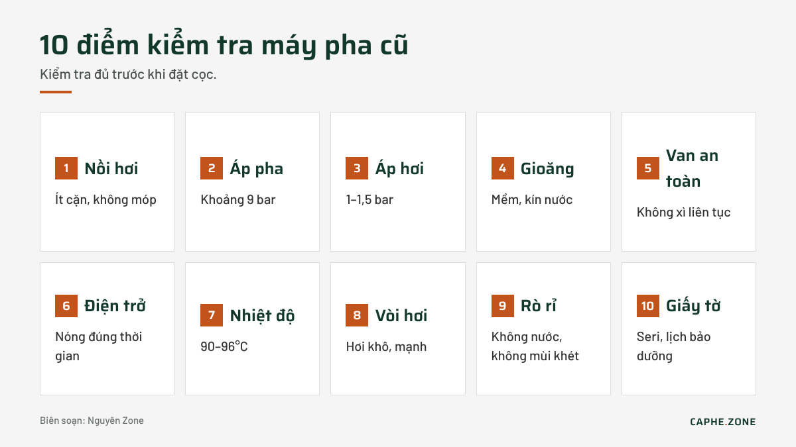

Mua máy pha cà phê thanh lý: checklist 10 điểm kiểm tra để không mua phải máy hỏng

Trả lời nhanh: Máy pha thanh lý có thể tiết kiệm 30–50% so với máy mới nếu được kiểm tra kỹ. Mười điểm cần xem: tình trạng nồi hơi và cặn vôi, áp suất bơm khi pha (khoảng 9 bar), áp suất nồi hơi (1–1,5 bar), gioăng và lưới họng pha, van an toàn, điện trở, bộ điều áp hoặc PID, đường hơi, rò rỉ nước, giấy tờ nguồn gốc và lịch sử bảo dưỡng.
Không ít quán mới mở chọn máy cũ để giảm vốn ban đầu. Đây là lựa chọn hợp lý nếu bạn biết cách kiểm tra hoặc mua từ đơn vị có kỹ thuật viên phục hồi máy bài bản. Ngược lại, một chiếc máy "đẹp vỏ" nhưng nồi hơi đầy cặn có thể khiến bạn tốn thêm tiền sửa chỉ sau vài tháng.
Vì sao máy pha cũ vẫn đáng mua?
Máy pha espresso thương mại được chế tạo để chạy nhiều năm. Khung inox, nồi hơi đồng hoặc inox, cụm họng pha E61 hay họng pha bão hòa đều có tuổi thọ dài nếu được bảo dưỡng. Phần hao mòn chủ yếu là linh kiện thay thế được như gioăng, lưới, van, bơm. Vì vậy, một chiếc máy pha cà phê thanh lý đã được vệ sinh nồi hơi và thay linh kiện hao mòn có thể vận hành ổn định như máy mới trong nhiều năm.
Checklist 10 điểm kiểm tra

1. Nồi hơi và cặn vôi
Hỏi người bán có thể mở nắp thăm nồi hơi hoặc tháo điện trở để soi bên trong không. Lớp cặn trắng dày bám trên điện trở và thành nồi là dấu hiệu máy dùng nước cứng lâu năm, chưa từng tẩy cặn.
2. Áp suất bơm khi pha
Lắp tay cầm có đồng hồ đo áp (portafilter gauge) hoặc quan sát đồng hồ trên máy. Khi chiết xuất, áp suất nên nằm quanh 9 bar. Áp quá thấp có thể do bơm yếu, quá cao có thể do van giới hạn áp (OPV) chỉnh sai.
3. Áp suất nồi hơi
Đồng hồ nồi hơi thường ổn định ở 1–1,5 bar. Kim dao động mạnh hoặc không lên áp là dấu hiệu bộ điều áp (pressurestat) hoặc điện trở có vấn đề.
4. Gioăng và lưới họng pha
Gioăng cứng, nứt khiến nước rò quanh tay cầm. Đây là lỗi nhỏ, chi phí thay thấp, nhưng giúp bạn đánh giá máy có được chăm sóc hay không.
5. Van an toàn
Van an toàn xì liên tục là dấu hiệu áp nồi hơi vượt ngưỡng. Không nên mua máy có van an toàn bị chặn hoặc tháo bỏ.
6. Điện trở và thời gian làm nóng
Máy 2 họng thường mất 20–30 phút để đạt áp hơi ổn định. Nếu lâu hơn nhiều, điện trở có thể đã yếu hoặc bám cặn.
7. Nhiệt độ nước pha
Dùng nhiệt kế đo nước chảy từ họng pha. Nhiệt độ quanh 90–96°C là chấp nhận được. Máy có PID nên kiểm tra nhiệt độ hiển thị so với thực tế.
8. Đường hơi và vòi nước nóng
Mở vòi hơi, hơi phải khô, mạnh, không lẫn nhiều nước. Vòi nước nóng chảy đều, không lẫn cặn.
9. Rò rỉ nước và điện
Quan sát mặt dưới máy, khay nước thải, các khớp nối. Kiểm tra dây nguồn, phích cắm, mùi khét khi chạy.
10. Giấy tờ và lịch sử bảo dưỡng
Hỏi rõ năm sản xuất, số seri, máy được dùng ở quán hay văn phòng, đã thay linh kiện gì. Máy có hóa đơn hoặc phiếu bảo dưỡng định kỳ đáng tin hơn nhiều.
Bảng đánh giá nhanh tình trạng máy
| Hạng mục | Tốt | Cần sửa | Nên tránh |
|---|---|---|---|
| Nồi hơi | Sạch, ít cặn | Cặn mỏng, tẩy được | Cặn dày, móp, rỉ sét |
| Bơm | Đạt 9 bar, êm | Ồn nhẹ, áp dao động | Không lên áp |
| Gioăng, lưới | Mềm, kín | Cứng, cần thay | Rò nước nhiều chỗ |
| Điện | Ổn định, không mùi | Đèn báo hỏng | Chập, mùi khét |
Nên mua từ cá nhân hay đơn vị chuyên thanh lý?
Mua từ cá nhân thường rẻ hơn nhưng rủi ro cao vì không có bảo hành. Đơn vị chuyên thu mua và thanh lý thường đã:
- Tẩy cặn nồi hơi và đường ống.
- Thay gioăng, lưới, van hao mòn.
- Chạy thử, cân chỉnh áp suất và nhiệt độ.
- Cung cấp bảo hành ngắn hạn, thường từ 1 đến 6 tháng.
Chênh lệch giá giữa hai nguồn thường nhỏ hơn chi phí bạn phải bỏ ra nếu tự sửa một chiếc máy hỏng.
Khi nào nên chọn máy mới thay vì máy cũ?
Nếu quán dự kiến bán trên 300 ly mỗi ngày, cần máy đa nồi hơi hoặc tính năng điều chỉnh profile áp suất, máy mới sẽ phù hợp hơn. Bạn có thể so sánh cấu hình và giá giữa máy cũ và các dòng máy pha cà phê mới để quyết định.
Chi phí phục hồi thường gặp
Ngay cả khi máy còn tốt, bạn nên dự trù một khoản để phục hồi sau khi mua. Các hạng mục phổ biến:
- Bộ gioăng và lưới họng pha cho tất cả các họng.
- Hóa chất tẩy cặn và công vệ sinh nồi hơi.
- Lõi lọc nước mới hoặc bộ lọc hoàn chỉnh nếu chưa có.
- Thay van một chiều, van chân không hoặc van an toàn nếu đã cũ.
- Hiệu chỉnh áp suất bơm và nồi hơi.
Khoản dự phòng này thường chiếm khoảng 5–15% giá mua máy cũ. Khi so sánh với máy mới, hãy cộng cả khoản này để có con số tổng chi phí chính xác.
Câu hỏi thường gặp
Máy pha cũ bao nhiêu năm thì không nên mua? Tuổi máy không quan trọng bằng tình trạng nồi hơi và lịch sử bảo dưỡng. Máy 8–10 năm được chăm sóc tốt vẫn có thể dùng được.
Có nên mua máy thanh lý online không xem trực tiếp? Chỉ nên khi người bán có video chạy thử đầy đủ áp suất, nhiệt độ và có chính sách đổi trả rõ ràng.
Sau khi mua máy cũ cần làm gì đầu tiên? Tẩy cặn, thay gioăng họng pha, kiểm tra áp suất, lắp bộ lọc nước trước khi đưa vào bán hàng.
Kết luận
Máy pha thanh lý là cách thông minh để giảm vốn mở quán, với điều kiện bạn kiểm tra đủ 10 điểm trên hoặc mua từ đơn vị có kỹ thuật viên phục hồi máy chuyên nghiệp.
Biên soạn: Nguyên Zone – Caphe.Zone.